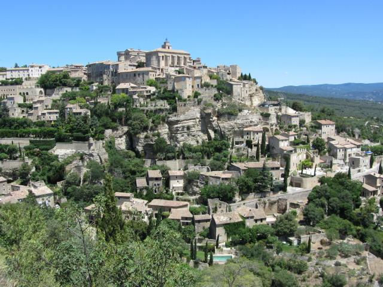

France is one of the most modern countries in today's world and is one of the leaders among Europe. France plays a very influential global role as members of the United Nations Security Council, NATO, the G-7, the G-20, the EU, and others.
Since 1958, it has developed a hybrid presidential-parliamentary governing system which is resistant to the vulnerabilities experienced in earlier times.
In recent decades, its resolution and cooperation with Germany have proved vital to the economic integration of Europe, including the introduction of a common currency, the euro, in January 1999. In the early 21st century, five French overseas entities - French Guiana, Guadeloupe, Martinique, Mayotte, and Reunion - became French regions and were made part of France proper.
France is located in Western Europe, bordering the Bay of Biscay and English Channel, between Belgium and Spain, southeast of the UK; bordering the Mediterranean Sea, between Italy and Spain.
Generally cool winters and mild summers, but mild winters and hot summers along the Mediterranean; occasional strong, cold, dry, north-to-northwesterly wind known as the mistral.
Mostly flat plains or gently rolling hills in north and west; remainder is mountainous, especially Pyrenees in south, Alps in east.
Much of the population is concentrated in the north and southeast; although there are many urban agglomerations throughout the country, Paris is by far the largest city, with Lyon ranked a distant second.
Population is 67,848,156 as of July 2020.
The countries official website can be found here.
Source: CIA World Factbook